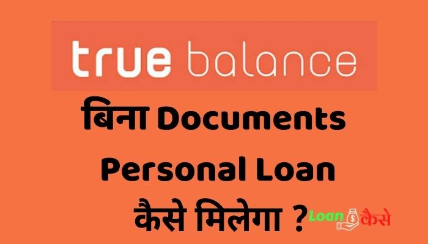

दोस्तों क्या आप भी Loan लेना चाह रहे हैं ?और आपके पास Loan लेने के लिए कोई डॉक्यूमेंट(Documents) नहीं है तो आप बिल्कुल सही जगह है आज हम आपको बताने वाले हैं कि TrueBalance se Bina Documents ke Loan kaise milega.जी हां दोस्तों आप कहीं भी Loan लेने के लिए जाएंगे तो सबसे पहले आपको कुछ डॉक्यूमेंट(Documents) देने पड़ते हैं और अगर आपके पास वह डॉक्यूमेंट(Documents) नहीं हो तो आपको Loan नहीं दिया जाता है लेकिन आज मैं आपको एक ऐसे Application(एप्लीकेशन) के बारे में बताने जा रहा हूं जिसकी मदद से आप बिना किसी Documents के Loan ले सकते हैं वह भी बिल्कुल आसानी से 5 मिनट के अंदर तो आइए जानते हैं कि truebalance se Bina Documents ke Loan kaise milega?

{kind=link}
ट्रू बैलेंस (True Balance)क्या है?
दोस्तों ट्रू बैलेंस(True Balance) एक फाइनेंस Application(एप्लीकेशन) है ,इस Application(एप्लीकेशन) का काम लोगों को Loan देना है ट्रू बैलेंस (TrueBalance) के लगभग 70 मिलीयन यूजर है इंडिया के अंदर काफी सारे लोग Loan लेने के लिए ट्रू बैलेंस (TrueBalance) Application(एप्लीकेशन) का उपयोग करते हैं और ट्रू बैलेंस (TrueBalance) Application(एप्लीकेशन) से Loan लेकर अपना काम करते हैं। truebalance Application(एप्लीकेशन) बिना किसी डॉक्यूमेंट(Documents) के आपको इंस्टेंट Loan प्रोवाइड करता है वह भी कम से कम इंटरेस्ट रेट पर तो अगर आप भी ट्रू बैलेंस (TrueBalance) Application(एप्लीकेशन) से Loan लेना चाहते हैं तो इस पोस्ट को लास्ट तक पढ़िए तभी आप समझ पाएंगे कि ट्रू बैलेंस (TrueBalance) Application(एप्लीकेशन) से Loan कैसे लेना है तो चलिए शुरू करते हैं
दोस्तों जो बैलेंस Application(एप्लीकेशन) से Loan लेने से पहले आपको कुछ जरूरी बातें जान लेना चाहिए तो आइए जानते हैं वह कौन कौन सी जरूरी चीजें हैं
ट्रू बैलेंस (TrueBalance) से Loan कौन कौन ले सकता है?
दोस्तो ट्रू बैलेंस (TrueBalance) Application(एप्लीकेशन) से कोई भी Loan ले सकता है जो भारत का नागरिक है, और जिसकी उम्र 18 साल या उससे ज्यादा हो.
ट्रू बैलेंस (TrueBalance) से Loan लेने के लिए क्या-क्या डॉक्यूमेंट (Documents) लगते हैं?
ट्रू बैलेंस (TrueBalance) से Loan लेने के लिए कोई डॉक्यूमेंट(Documents) की आवश्यकता नहीं होती है आपको सिर्फ अपना पैन नंबर और आधार नंबर अपने साथ रखना है और Loan लेते समय जब इस Application(एप्लीकेशन) के द्वारा Pan नंबर या आधार नंबर मांगा जाएगा तब देना है।
ट्रू बैलेंस (TrueBalance) से कितना Loan मिलेगा?
अगर आप पेपरलेस Loan ले रहे हैं तो आपको ₹1000 से 100000 तक का Loan ट्रू बैलेंस (TrueBalance) Application(एप्लीकेशन) से मिल सकता है।
ट्रू बैलेंस (TrueBalance) से Loan लेने पर कितना इंटरेस्ट लगेगा?
ट्रू बैलेंस (TrueBalance) Loan लगभग 5 % परसेंट तक का इंटरेस्ट आपको चार्ज करता है उदाहरण के लिए अगर आप 10000 तक का Loan 90 दिन के लिए लेते हैं तो आपको ३% तीन परसेंट प्रोसेसिंग फी जो कि ₹300 + 18 % GST= ₹54 कुल ₹354
और उसका इंटरेस्ट पंद्रह प्रतिशत =₹100 देने होंगे
तो इस तरह से EMI ₹3833 का होगा और आपको कुल अमाउंट ₹11854 पेमेंट करने होंगे जीएसटी और प्रोसेसिंग फी मिलाकर।
ट्रू बैलेंस (TrueBalance) कितने समय के लिए Loan देता है
ट्रू बैलेंस (TrueBalance) 62 दिन से 90 दिनों तक का Loan प्रोवाइड करता है यानी कि 2 महीने से 3 महीने तक का लोनी Provide करता है,
ट्रू बैलेंस (TrueBalance) से Loan कैसे मिलेगा?
ट्रू बैलेंस (TrueBalance) से Loan लेने के लिए आपको सबसे पहले ट्रू बैलेंस (TrueBalance) Application(एप्लीकेशन) को Plays tore में जाकर इंस्टॉल कर लेना है और उसके बाद कुछ Step को फॉलो करने हैं जो कि नीचे दिया हुआ है।
- सबसे पहले आपको इस Application(एप्लीकेशन) को ओपन करना है ओपन करने के बाद इसमें आपको कुछ परमिशन देने होंगे तो आप परमिशन दे दीजिए उसके बाद Language choose करना होगा तो Language भी choose कर लीजिए जो भी Lnaguage में आप इस Application(एप्लीकेशन) को चलाना चाहते हैं.
- उसके बाद आपको अपना यूजर आईडी और पासवर्ड क्रिएट करना होगा और उस पासवर्ड से इसमें लोगिन कर लेना है
- ट्रू बैलेंस (TrueBalance) अकाउंट में लॉगिन कर लेने के बाद आपको कुछ इस तरह का टैब दिखेगा इसमें आप नीचे बीच में देखेंगे दो टैब बने हुए हैं
एक कैश Loan का
और दूसरा है लेवल अप Loan का - पहला जो है कैश Loan एप यह आप 5 मिनट में ले सकते हैं।
- और दूसरा है लेवल up Loan इसमें आप देख सकते हैं लिखा हुआ है नो डॉक्युमेंट्स रिक्वायर्ड तो आज हम आपको यही बताने वाले हैं लेवल अप Loan कैसे लेना है इसमें आपको कोई documents देने की जरूरत नहीं है
- तो आपको यहां पर लेवल Up Loan के सामने जो Get का Tab है उस पर क्लिक कर देना है
- यहां पर देखिए लिखा हुआ है You can get this loan with आधार ,पैन। आपको इसमें आधार और पैन कार्ड चाहिए । लेकिन यहां पर डॉक्यूमेंट(Documents) कोई नहीं आपको देना है यह आधार और पैन कब जरूरी होगा यह मैं आपको आगे बताऊंगा तो यहां पर इसे स्कीप करके आगे बढ़ जाना है और गेट स्टार्ट पर क्लिक कर देना
- देखिए यहां पर जो है आपको दिखा रहा है कि Do you want to increase your loan limit अभी आपको यहां पर ₹1000 ही दिखाएगा अभी आप 1000 Loan लेने के लायक ही है जब आप इस Loan को ले लेंगे और आप जब इस loan को वापस कर देंगे तो आपका लिमिट बढ़ जाएगा ऐसे करते-करते जब आप लेवल 11 पर पहुंच जाएंगे तब आपको एक लाख तक का Loan मिल सकता है
- तो आपको अभी फिलहाल 1000 तक का ही Loan लेना है कुछ दिनों के बाद Loan को पेमेंट कर देना और जब आप इस Loan को repay कर देंगे तो फिर आपका Loan अमाउंट बढ़ जाएगा ऐसे करते-करते लेवल 11 तक आप Loan अमाउंट बढ़ा सकते हैं और यह Loan अमाउंट ₹100000 तक हो जाएगा
- तो चलिए हम गेट Loan पर क्लिक कर देते हैं गेट पर क्लिक करने के बाद आपको यहां पर केवाईसी कंपलीट करने के लिए बोलेगा तो प्रोसीड पर क्लिक कर दीजिएगा।
- Proceed पर क्लिक करने के बाद आपको कुछ टर्म एंड कंडीशन दिखेगा इसे पढ़ लेना है और एग्री पर क्लिक कर देना है।
- एग्री पर क्लिक कर देने के बाद आपको पैन नंबर मांगा जाएगा तो आप अपना पैन नंबर सही-सही भर दीजिए इसमें और प्रोसीड पर क्लिक कर दीजिए।
- यहाँ आपको फिर से अपना कर पैन नंबर कंफर्म करने के लिए बोलेगा तो आप चेक कर लीजिए कि आपका पैन नंबर सही-सही डाला हुआ है या नहीं उसके बाद सबमिट पर क्लिक कर दीजिए।
- अब आपको इसमें डेट ऑफ बर्थ डाल देना है अपना और फिर प्रोसीड पर click कर देना है
- अब आपको एक OTP आएगा तो ओटीपी डाल देना है
- अगर आपका सारा डॉक्यूमेंट(Documents) सही रहा तो आपके पास केवाईसी सक्सेसफुली done होने का एक मैसेज आ जाएगा और नीचे गेट टू कैश Loan का टेब आ जाएगा।
- उसके बाद आपको गेट टू कैश Loan पर क्लिक कर देना है यहां पर आपको ऊपर में अमाउंट दिख रहा है ₹1000 क्योंकि अभी मैं लेवल फर्स्ट पर हूं ।
- नेक्स्ट में क्लिक कर देते हैं अभी हम से पूछ रहा है कि आप कितने emi भरना चाहते हैं तो यह emi जनरल 1 महीने पर भरना होता है तो मैं यहां पर दो बार कर देता हूं
तो आज आपने जाना की TrueBalance se Bina Documents ke Loan kaise milega?
तो इस तरह से आप ट्रू बैलेंस (TrueBalance) Application(एप्लीकेशन) से बिना अपना कोई डॉक्यूमेंट(Documents) अपलोड किए Loan के लिए अप्लाई कर सकते हैं ट्रू बैलेंस (TrueBalance) Loan के लिए अप्लाई कर देने के बाद आपके ट्रू बैलेंस (TrueBalance) नोटिफिकेशन में एक नोटिफिकेशन आ जाएगा।
उसमें आपको लिखा हुआ रहेगा कि आपका Loan अप्रूव हुआ है या नहीं Loan approved हो जाएगा तो आपके ट्रू बैलेंस (TrueBalance) अकाउंट में दिखने लगेगा और उस पैसे को चाहे तो आप अपने बैंक अकाउंट में ले सकते हैं या ऑनलाइन शॉपिंग कर सकते हैं या मोबाइल रिचार्ज कर सकते हैं किसी भी काम के लिए उस पैसे को use कर सकते हैं ।
दोस्तों जब आप समय पर इस एक हजार रुपए के Loan को चुका देंगे तो फिर आपका लेवल बढ़ जाएगा और आप नेक्स्ट टाइम से ज्यादा पैसे का Loan ले सकते हैं इस तरह से अपना लेवल बढ़ाकर आप एक लाख तक का Loan ट्रू बैलेंस (TrueBalance) Application(एप्लीकेशन) से सिर्फ 5 मिनट के अंदर इंसटैंटली ले सकते हैं
दोस्तों मुझे उम्मीद है कि आप समझ गए होंगे कि बिना डॉक्यूमेंट(Documents) अपलोड किए ट्रू बैलेंस (TrueBalance) है Loan कैसे लेते हैं अगर आपको यह पोस्ट अच्छी लगी हो तो अपने दोस्तों के साथ जरूर शेयर करें।